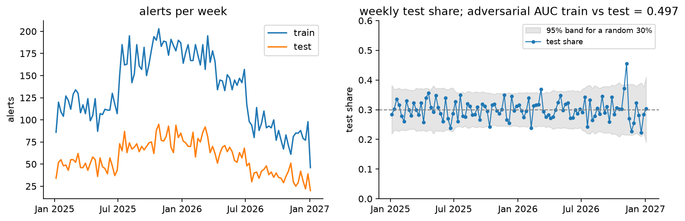
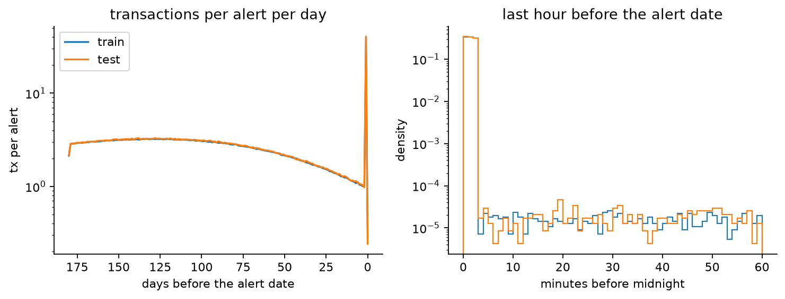
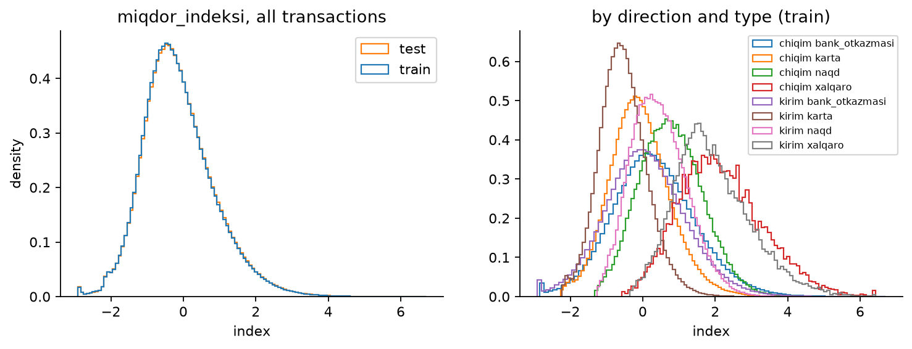
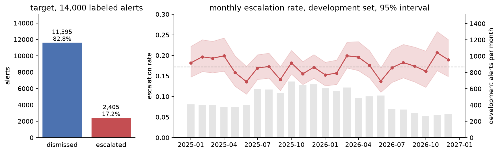
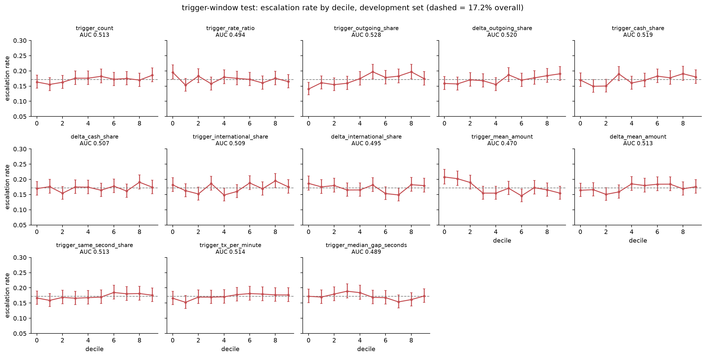
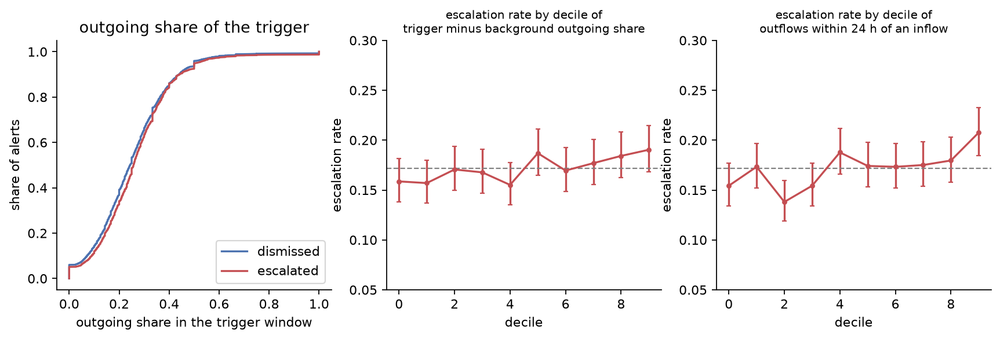
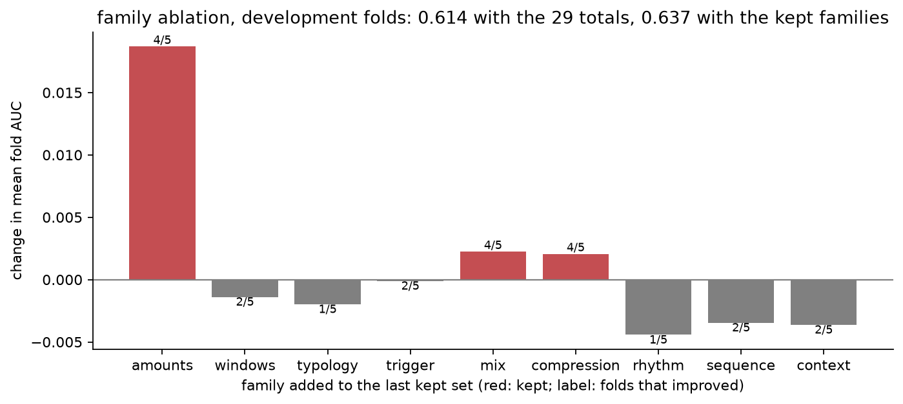
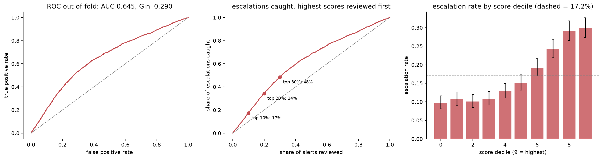

01
Approach
Every alert in the data has already passed a monitoring rule, so the dismissed alerts are near misses, not ordinary customers. The label is an analyst's decision. Our goal is to rank the alert queue so that the alerts most likely to be escalated come first. The score is ROC-AUC on a hidden test set, and each team submits once, so our own validation had to be trustworthy.
- Audit first. Check the data's integrity, how the test set was drawn and anything that could leak the label, before looking at the target.
- Fix validation once. The labeled alerts are split 80 / 20, stratified on the label. Every decision uses the same five folds of the 80% development set. The 20% holdout is scored once, after the model is frozen.
- Explore behavior on the development set. Each history is split into the customer's background and the trigger window just before the alert, and escalated and dismissed alerts are compared on both.
- Turn observations into features. Each idea becomes a feature family. A family stays only if it raises the cross-validated AUC on average and on at least 4 of 5 folds.
- Model and submit. LightGBM with shallow trees, averaged over three seeds, then refit on all 14,000 labeled alerts for the submission.
02
Dataset
Each set has two tables. The signals table holds one row per alert: its ID, the alert date and, in training, the label. The transactions table holds each alert's history, one row per transaction, with a timestamp, a direction, a type and a standardized amount index. There is no customer ID, no account balance, no counterparty and no information about which rule fired.
| Train | Test | |
|---|---|---|
| Alerts | 14,000 | 6,000 |
| Transactions | 6,987,663 | 3,027,575 |
| Alert dates | Jan 2025 – Dec 2026 | Jan 2025 – Dec 2026 |
| Transactions per alert, median | 461 | 460.5 |
| Lookback window before the alert date | 180 days | 180 days |
| Escalated | 2,405 (17.2%) | hidden |
Columns
| Table | Column | Meaning |
|---|---|---|
| signals | signal_id | alert ID, one row per alert |
| signals | signal_sanasi | alert date (day precision) |
| signals | eskalatsiya | target: 1 = escalated, 0 = dismissed (training only) |
| transactions | tranzaksiya_vaqti | timestamp, second precision |
| transactions | kirim_chiqim | direction: kirim = incoming, chiqim = outgoing |
| transactions | tranzaksiya_turi | type: karta = card, bank_otkazmasi = bank transfer, naqd = cash, xalqaro = international |
| transactions | miqdor_indeksi | standardized transaction-size index; the exact transform is unknown |
Transaction mix
Share of all training transactions by direction and type.
| Card | Bank transfer | Cash | International | All | |
|---|---|---|---|---|---|
| Incoming | 41.3% | 29.3% | 4.8% | 0.35% | 75.7% |
| Outgoing | 12.5% | 10.2% | 1.6% | 0.11% | 24.3% |
| All | 53.8% | 39.4% | 6.3% | 0.46% | 100% |
Three in four transactions are incoming. Card payments and bank transfers make up 93% of all rows, cash 6% and international transfers under half a percent, so anything international is sparse. Train and test shares agree within 0.2 percentage points.
Data quality
- No missing values, no duplicate rows, no orphan transactions, and every alert has a history.
- Nothing is recorded after the alert date.
- No transaction appears under two alerts, so every alert is its own history.
- Alert IDs, file order and alert dates carry no information about the label (AUC 0.50 to 0.51).
How the test set was drawn
If the hidden test set were a later period, cross-validation on training alerts would misjudge the score. Two checks strongly support that it is not. Week by week, train and test alerts rise and fall together, and the weekly test share stays inside the 95% binomial interval expected under random 30% assignment in 101 of 105 weeks. An adversarial validation classifier trained to separate test from training alerts reaches an AUC of 0.497, indistinguishable from chance.

The test set is consistent with an interleaved sample from the same population as train, so shuffled, stratified cross-validation on the training alerts faces the same task as the hidden test. No time split is needed.
03
What the transaction history looks like
With the data checked, the next question was what the months before an alert look like. Two views shaped the model.
Months of background, then a burst
Transactions are observed within a common 180-day lookback window before the alert date. Background activity peaks at about 3 transactions per alert per day four months out and falls to about 1 a day in the final week. Then about 8% of all rows land in the last few minutes before the alert date: a burst of 31 transactions for the median alert.

The burst has its own make-up: 60% card payments against 53% in the background, fewer transfers (32% against 40%) and a mean amount index of −0.50 against −0.10. It is a rapid run of small card payments. 152 alerts have no burst and 21 carry it on the alert day itself, so we define the trigger window by day (the alert day and the day before), not by clock time. Clock time carries no rhythm of its own: every hour and every weekday holds the same share of transactions, except hour 23, which is the burst.
We read the burst as the activity that triggered the rule, the trigger window, and the months before it as the customer's background. An analyst asks how different the trigger is from the customer's normal, so the burst became our first behavioral hypothesis. Section 04 tests it.
Amounts: one scale, shifted by channel
The amount index is one scale for all transactions: roughly normal with a right tail and a floor at −2.9, and not standardized within each alert (per-alert means spread by about 0.5). Within every direction and type it is again bell-shaped, only shifted: card lowest, then transfers and cash, international about two units higher, and outgoing above incoming. Only four values repeat exactly, and each is the cap of one transaction type.

miqdor_indeksi. Left: all transactions, train and test. Right: by direction and type (training set). Each channel is a shifted bell curve.A single global threshold would mostly flag international transfers. "Large" only means something within a channel, so the engineered amount features are standardized within each direction × type.
04
Target and behavior
Target distribution
Dismissed 82.8% Escalated 17.2%
2,405 of the 14,000 training alerts were escalated, about one for every 4.8 dismissed. That is imbalanced but not rare, and AUC depends only on ranking, so we don't resample; every split is stratified on the label instead. The labeled alerts were split once: 11,200 development alerts in five fixed folds, and a 2,800-alert holdout that stayed closed until the model was frozen. Every view below uses the development set only.
Stable over two years
If the escalation policy had changed, old alerts would teach the model the wrong rule. It did not. The monthly escalation rate moves between 13.6% and 20.7% with no step and no trend: a chi-square test of homogeneity across the 24 months gives p = 0.14, and 2025 and 2026 escalate at 17.0% and 17.3%. Alert volume moves in steps, and the rate does not follow it.

How we compared the classes
Each alert is summarized once, so long histories do not dominate, and the classes are compared with empirical cumulative distribution functions (ECDFs) and with the escalation rate by decile, each with a 95% Wilson confidence interval. With 1,924 escalated and 9,276 dismissed development alerts, the standard error of a univariate AUC under the null is about 0.007, so any AUC between 0.486 and 0.514 lies inside the 95% null interval and is not distinguishable from chance. Two intuitive hypotheses did not hold; the third idea did.
Hypothesis 1: the burst drives escalation
Our first bet after the audit: the burst right before an alert, judged against the customer's own background, is what analysts react to. We tested it with 13 variables that describe the burst (size, direction, channel, amount, speed) or its change from the background.

It did not hold. All 13 AUCs lie between 0.470 and 0.528, and the decile curves stay flat around the 17.2% line. The burst's size relative to the background, the lead candidate, scores 0.494. All 13 together reach a cross-validated AUC of 0.547, below the 0.614 of simple 180-day totals.
Almost every alert has a burst (all but 152 of 14,000). It is common structure rather than what sets the escalated ones apart.
Hypothesis 2: money passes straight through
Pass-through, money that arrives and leaves again quickly, is a classic laundering pattern, so we expected it to mark escalated alerts. They do lean that way, but only slightly: their trigger windows are a little more outgoing (AUC 0.528), outflows within 24 hours of an inflow are a little more common (0.526), and the time from an inflow to the next outflow is a little shorter (0.478).

The right direction, but too small to use: as a feature family it lowered the model's AUC (section 05), so the final model has no pass-through features.
Where the classes differ: transfer amounts
Standardized within each channel, escalated alerts make smaller bank transfers: a mean difference of −0.15 channel standard deviations for outgoing (AUC 0.426) and −0.12 for incoming (0.439), while their card and cash payments barely differ. An alert's amounts are also positively correlated across channels, so we measured transfers against the alert's own card spending, and the gap sharpened.

Outgoing transfer size minus outgoing card size scores an AUC of 0.603 with an inverse relationship (lower values, higher escalation rate), and every fold lies between 0.570 and 0.625. Across its deciles the escalation rate falls from about 24% to 9%, while card size alone is near chance (AUC 0.495). The heatmap shows why: conditional on card level, smaller transfers go with a higher escalation rate.
Three illustrative alerts show how the measure is read. Each value is the alert's mean in standard deviations of its own channel.
| Alert | Outgoing transfers | Outgoing cards | Transfer − card | Escalated at this level |
|---|---|---|---|---|
| A | −0.19 | +0.44 | −0.63 | about 24–25% |
| B | +0.58 | −0.15 | +0.73 | about 9% |
| C | −0.19 | −0.63 | +0.44 | about 9–12% |
Alert A transfers small amounts for a customer who spends above average by card, which is the risky pattern. Alert C transfers exactly as little, but its card payments are small too, so for this customer the transfers are normal. The pattern recalls structuring, but the data cannot tell us why analysts escalate it.
This became the main feature family: amount levels per channel, and relative sizes across channels, above all transfers against the alert's own card level.
What held up
| Idea | Development set | Verdict |
|---|---|---|
| The burst, or its change from the background, drives escalation | 13 variables at AUC 0.470 to 0.528; 0.547 together | Not supported |
| Money passes through quickly | AUC 0.478 to 0.528; lowers the model's AUC as a family | Right direction, too small |
| Amounts are unusual for the alert's own channels | Transfers smaller; transfer minus card AUC 0.603 | Supported: the main signal |
05
From EDA to the model
Each finding above changed a modeling decision.
| What we saw | What we do |
|---|---|
| Test alerts are interleaved with train over the same two years and indistinguishable from them under adversarial validation (AUC 0.497) | Stratified, shuffled 5-fold cross-validation and one holdout, no time split |
| Nothing is recorded after the alert, and no transaction is shared between alerts | One pipeline for train and test, every window measured backwards from the alert date, every alert treated as independent |
| Every history is a 180-day background followed by a burst | Describe the background and the trigger window separately |
| The burst does not separate the classes | Trigger features only as a low-priority family, which the ablation then dropped |
| Each channel sits at its own amount level | Engineered amount features standardized within each direction × type, with channel means and spreads from train and test transactions without labels |
| Escalated alerts transfer small amounts for their own card level | The main family: channel-relative amounts and cross-channel contrasts |
Baseline: what totals alone can do
Before any behavioral feature, we trained a deliberately simple reference: LightGBM on 29 totals per alert (count, sum, mean, spread and maximum of the amount index over the 180 days, plus count, sum and maximum for each of the eight direction × type channels). It reaches a cross-validated AUC of 0.614 as the mean of the five folds, or 0.612 with all folds pooled. Early stopping keeps only 5 to 86 trees and the best single total scores 0.556, so the model was feature-limited rather than capacity-limited. Every feature family was judged against it on the same frozen folds.
Which ideas paid off
Nine feature families from the EDA were added one at a time on top of the totals, in the order the EDA ranked them. A family stayed only if the mean fold AUC rose and at least 4 of 5 folds improved.

The channel-relative amounts carried almost all of the gain: +0.019, with 4 of 5 folds up. Background channel shares added +0.002. Burst compression passed on one seed but not under three, so it was dropped. The trigger family changed the AUC by −0.0001 and pass-through lowered it by 0.002, which settles both hypotheses from section 04. Time windows, rhythm, transaction sequences and context features lowered it too.
One idea from the EDA did the heavy lifting: amounts judged on each channel's own scale.
Sharper amount contrasts
The feature screen also found the mirror image of the transfer signal in cash: incoming cash that is large for the alert's card level goes with escalation (AUC 0.549). A wider search on the development folds, with the holdout still closed, turned both findings into two sharper contrasts:
- Transfer vs card, upper quartile The upper quartile of the alert's outgoing transfer sizes minus that of its card payments. AUC 0.613 with an inverse relationship (lower values, higher escalation rate).
- Cash vs transfers Incoming cash minus card, less the transfer-minus-card contrasts. High when cash is large and transfers are small for the card level. AUC 0.609.
Added to the model, they raised the cross-validated AUC under all three seeds (+0.007 to +0.009) and on 5 of 5 folds, and the gain replicated on three independent re-partitions of the development set.
The final model
- 64 features: 28 full-history totals, 28 channel-relative amount features (the two contrasts among them) and 8 background channel shares.
- LightGBM with shallow trees (7 leaves, at least 200 alerts per leaf, learning rate 0.01), averaged over three seeds. Light tuning added about 0.006.
- No second model. CatBoost (AUC 0.635) and rank blends of the two added nothing, so the model is LightGBM alone.
What drives the model
Amounts account for 65% of the mean absolute SHAP value, totals 27% and channel shares 9%. The two contrasts rank first and second. For each of the ten strongest features, the sign of its SHAP effect matches the direction of its univariate association with escalation: cash that is large and transfers that are small for the alert's card level raise it.
![Two panels. Left: horizontal bars of the share of total gain for the 15 strongest features, led by the cash-minus-transfer contrast at about 0.18 and the upper-quartile transfer-minus-card contrast at about 0.15, followed by other amount, total and channel-share features at 0.015 to 0.035. Right: SHAP values for the same kind of top 15 features, one dot per development alert coloured by feature value; high values of the cash contrast push the score up and high values of the transfer contrast push it down.](figures/F17_feature_importance_shap.png)
Larger amounts in general lower the score. That is how alerts were decided in this data, where escalated alerts make smaller transfers; it does not mean large amounts are safe.
06
Results
The holdout was scored once, after the features and the model were frozen, and it agrees with the cross-validated estimate. The submission comes from the same model refit on all 14,000 labeled alerts, with each test score the mean of 15 models (5 folds × 3 seeds). The development and refit numbers are pooled out-of-fold (OOF) estimates: each alert is scored only by models not trained on it.
| Alerts | ROC-AUC | Gini | |
|---|---|---|---|
| Baseline, 29 totals, development folds | 11,200 | 0.612 | 0.224 |
| Final model, development folds | 11,200 | 0.645 | 0.290 |
| Holdout, scored once (95% bootstrap confidence interval 0.626–0.678) | 2,800 | 0.651 | 0.301 |
| Refit on all labeled alerts, out of fold | 14,000 | 0.643 | 0.286 |
Pre-registered warning threshold: holdout AUC below 0.620. Holdout 0.651, so the warning was not triggered, and nothing was tuned or changed after the holdout was scored.
In queue terms
An analyst who works through the queue in score order finds escalations early.

| Review the top | Escalations caught | Escalation rate |
|---|---|---|
| 10% | 17.4% | 29.9% |
| 20% | 34.4% | 29.5% |
| 30% | 48.5% | 27.8% |
| Bottom 10%, for contrast | – | 9.7% |
The top decile escalates at 29.9%, a lift of 1.7 over the 17.2% base rate. But even the bottom tenth escalates at 9.7%, so the score is a way to order the queue, not to close alerts unseen.
07
Conclusion
- The test set is consistent with an interleaved sample from the same population as train, so stratified cross-validation mirrors the hidden test. The holdout, scored once, agreed with it: 0.651 against 0.645.
- 17.2% of alerts are escalated, at a rate that stays stable over two years.
- Almost every alert has the same shape: a 180-day background, then a dense burst of transactions in the minutes before the alert. The burst is common structure rather than what sets escalated ones apart.
- The signal is in amounts judged on each channel's own scale. Escalated alerts transfer small amounts, and deposit large amounts of cash, for their own card spending. The model's two strongest features are contrasts of exactly this.
- Pass-through shows the expected sign but a negligible effect size (AUC 0.478–0.528), and it did not improve the model.
- Features did most of the work, from 0.612 with simple totals to 0.645; tuning added about 0.006.
- Reviewing the top 20% of the queue by score catches 34% of escalations. The labels are past analyst decisions, and what likely drove many of them, such as the rule that fired or the customer's profile, is not in the data.